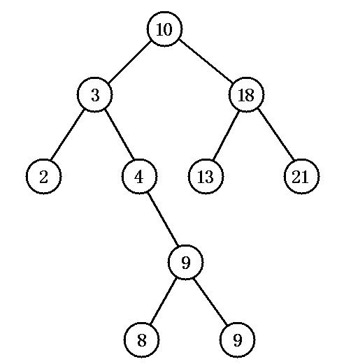
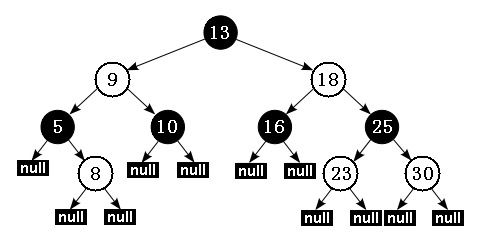

TreeMap也是Map接口的实现类，它最大的特点是迭代有序，默认是按照key值升序迭代（当然也可以设置成降序）。在前面的文章中讲过LinkedHashMap也是迭代有序的，不过是按插入顺序或访问顺序，这与TreeMap需要区分开来。TreeMap内部用红黑树存储数据，而不是像HashMap、LinkedHashMap、WeakHashMap一样使用哈希表来存储。
此外，TreeMap也是非线程安全的，并且与基于哈希表实现的Map实现类不同，TreeMap的key和value值都不允许为Null。
在介绍红黑树之前，先简单介绍一下排序二叉树。排序二叉树是一种特殊结构的二叉树，可以非常方便地对树中所有节点进行排序和检索。
排序二叉树可以为空树，如果它不为空，则满足以下性质：
下图即为一个排序二叉树：

对排序二叉树，若按中序遍历就可以得到由小到大的有序序列。
排序二叉树虽然可以快速检索，但在最坏的情况下：如果插入的节点集本身就是有序的，要么是由小到大排列，要么是由大到小排列，那么最后得到的排序二叉树将变成链表：所有节点只有左节点（如果插入节点集本身是大到小排列）；或所有节点只有右节点（如果插入节点集本身是小到大排列）。在这种情况下，排序二叉树就变成了普通链表，其检索效率就会很差。
而红黑树则是对这一点进行了改进的排序二叉树，也叫“对称二叉B树”，它在原有的排序二叉树增加了如下几个要求：
下图展示了一个红黑树，其中白色节点代表红色。

根据性质 5：红黑树从根节点到每个叶子节点的路径都包含相同数量的黑色节点，因此从根节点到叶子节点的路径中包含的黑色节点数被称为树的“黑色高度（black-height）”。 性质 4 则保证了从根节点到叶子节点的最长路径的长度不会超过任何其他路径的两倍。假如有一棵黑色高度为 3 的红黑树：从根节点到叶节点的最短路径长度是 2，该路径上全是黑色节点（黑节点 - 黑节点 - 黑节点）。最长路径也只可能为 4，在每个黑色节点之间插入一个红色节点（黑节点 - 红节点 - 黑节点 - 红节点 - 黑节点），性质 4 保证绝不可能插入更多的红色节点。由此可见，红黑树中最长路径就是一条红黑交替的路径。
由此我们可以得出结论：对于给定的黑色高度为 N 的红黑树，从根到叶子节点的最短路径长度为 N-1，最长路径长度为 2 * (N-1)。
红黑树通过上面这种限制来保证它大致是平衡的——因为红黑树的高度不会无限增高，这样保证红黑树在最坏情况下都是高效的，不会出现普通排序二叉树的情况。
在红黑树上进行插入操作和删除操作会导致树不再符合红黑树的特征，因此插入操作和删除操作都需要进行一定的维护，以保证插入节点、删除节点后的树依然是红黑树。这也是我们在阅读TreeMap源码的时候需要着重关注的部分。
先来看一下TreeMap的定义：
public class TreeMap<K,V>
extends AbstractMap<K,V>
implements NavigableMap<K,V>, Cloneable, java.io.Serializable
这里可以看到，TreeMap实现了一个NavigableMap<K,V>接口，该接口定义如下：
public interface NavigableMap<K,V> extends SortedMap<K,V>
其继承自SortedMap<K,V>，该接口定义如下：
public interface SortedMap<K,V> extends Map<K,V>
顾名思义，SortedMap定义了有序的Map，这个顺序一般是指由Comparable接口提供的keys的自然序（natural ordering），也可以在创建SortedMap实例时，指定一个Comparator来决定Map的遍历顺序。
当我们在用集合视角（collection views，与HashMap一样，也是由entrySet、keySet与values方法提供）来迭代（iterate）一个SortedMap实例时会体现出key的顺序。
再申明一下关于Comparable与Comparator的区别：
插入SortedMap中的key的类都必须继承Comparable类（或指定一个comparator），这样才能确定如何比较（通过k1.compareTo(k2)或comparator.compare(k1, k2)）两个key，否则，在插入时，会报ClassCastException的异常。
此外，SortedMap中key的顺序性应与equals方法保持一致。也就是说k1.compareTo(k2)或comparator.compare(k1, k2)为true时，k1.equals(k2)也应该为true。
介绍完了SortedMap，现在再回到NavigableMap<K,V>上来。
NavigableMap出现于JDK 1.6，它在SortedMap的基础上，增加了一些“导航方法”（navigation methods）来返回与搜索目标最近的元素。例如：
lowerEntry，返回所有比给定Map.Entry小的元素floorEntry，返回所有比给定Map.Entry小或相等的元素ceilingEntry，返回所有比给定Map.Entry大或相等的元素higherEntry，返回所有比给定Map.Entry大的元素先来看一下TreeMap的静态内部类Entry，它实现了红黑树的节点：
static final class Entry<K,V> implements Map.Entry<K,V> {
K key;
V value;
Entry<K,V> left;
Entry<K,V> right;
Entry<K,V> parent;
//节点默认为黑色
boolean color = BLACK;
/** * 传入key，value，parent参数，创建新节点，子树为null，节点颜色默认为黑色。 */
Entry(K key, V value, Entry<K,V> parent) {
this.key = key;
this.value = value;
this.parent = parent;
}
/** * Returns the key. * * @return the key */
public K getKey() {
return key;
}
/** * Returns the value associated with the key. * * @return the value associated with the key */
public V getValue() {
return value;
}
/** * Replaces the value currently associated with the key with the given * value. * * @return the value associated with the key before this method was * called */
public V setValue(V value) {
V oldValue = this.value;
this.value = value;
return oldValue;
}
public boolean equals(Object o) {
if (!(o instanceof Map.Entry))
return false;
Map.Entry<?,?> e = (Map.Entry<?,?>)o;
return valEquals(key,e.getKey()) && valEquals(value,e.getValue());
}
public int hashCode() {
int keyHash = (key==null ? 0 : key.hashCode());
int valueHash = (value==null ? 0 : value.hashCode());
return keyHash ^ valueHash;
}
public String toString() {
return key + "=" + value;
}
}
从代码中可以看出，一个Entry对象代表了红黑树的一个节点，其中除了存放着key-value pair的key、value值，还存放着该节点的颜色、左子节点、右子节点、父节点。
再来看一下TreeMap的重要属性：
//用来它定制排序规则，当它的值为null时，则使用key的自然顺序排序
private final Comparator<? super K> comparator;
//红黑树的根节点
private transient Entry<K,V> root;
/** * The number of entries in the tree */
private transient int size = 0;
/** * The number of structural modifications to the tree. */
private transient int modCount = 0;
下面来看一下TreeMap中最常用的增删改查方法，它们的源码都很好地体现了红黑树的特点。
put方法可以将一对key-value pair放到TreeMap中，当然也可以修改TreeMap中某个key对应的value值。在内部实现中，也需要将一个节点添加到红黑树中，这改变了原有红黑树的结构，因此需要做一些调整来保证修改后的树也符合红黑树的规则，让我们来看看源码中是怎么做的：
public V put(K key, V value) {
Entry<K,V> t = root;
if (t == null) {
compare(key, key); // type (and possibly null) check
root = new Entry<>(key, value, null);
size = 1;
modCount++;
return null;
}
int cmp;
Entry<K,V> parent;
// split comparator and comparable paths
Comparator<? super K> cpr = comparator;
if (cpr != null) {
do {
parent = t;
cmp = cpr.compare(key, t.key);
if (cmp < 0)
t = t.left;
else if (cmp > 0)
t = t.right;
else
return t.setValue(value);
} while (t != null);
}
else {
if (key == null)
throw new NullPointerException();
@SuppressWarnings("unchecked")
Comparable<? super K> k = (Comparable<? super K>) key;
do {
parent = t;
cmp = k.compareTo(t.key);
if (cmp < 0)
t = t.left;
else if (cmp > 0)
t = t.right;
else
return t.setValue(value);
} while (t != null);
}
Entry<K,V> e = new Entry<>(key, value, parent);
if (cmp < 0)
parent.left = e;
else
parent.right = e;
fixAfterInsertion(e);
size++;
modCount++;
return null;
}
put方法就是将新的Entry添加到二叉排序树上的过程，内容并不复杂，需要额外关注的是它调用的fixAfterInsertion(e)方法，该方法就是修复红黑树的过程，其源码如下，笔者已进行了详细地注释：
private void fixAfterInsertion(Entry<K,V> x) {
x.color = RED;
// 直到 x 节点的父节点不是根，且 x 的父节点不是红色
while (x != null && x != root && x.parent.color == RED) {
// 如果 x 的父节点是其父节点的左子节点
if (parentOf(x) == leftOf(parentOf(parentOf(x)))) {
// 获取 x 的父节点的兄弟节点
Entry<K,V> y = rightOf(parentOf(parentOf(x)));
// 如果 x 的父节点的兄弟节点是红色
if (colorOf(y) == RED) {
// 将 x 的父节点设为黑色
setColor(parentOf(x), BLACK);
// 将 x 的父节点的兄弟节点设为黑色
setColor(y, BLACK);
// 将 x 的父节点的父节点设为红色
setColor(parentOf(parentOf(x)), RED);
x = parentOf(parentOf(x));
} else {// 如果 x 的父节点的兄弟节点是黑色
// 如果 x 是其父节点的右子节点
if (x == rightOf(parentOf(x))) {
// 将 x 的父节点设为 x
x = parentOf(x);
rotateLeft(x);
}
// 把 x 的父节点设为黑色
setColor(parentOf(x), BLACK);
// 把 x 的父节点的父节点设为红色
setColor(parentOf(parentOf(x)), RED);
rotateRight(parentOf(parentOf(x)));
}
} else {// 如果 x 的父节点是其父节点的右子节点
// 获取 x 的父节点的兄弟节点
Entry<K,V> y = leftOf(parentOf(parentOf(x)));
// 如果 x 的父节点的兄弟节点是红色
if (colorOf(y) == RED) {
// 将 x 的父节点设为黑色
setColor(parentOf(x), BLACK);
// 将 x 的父节点的兄弟节点设为黑色
setColor(y, BLACK);
// 将 x 的父节点的父节点设为红色
setColor(parentOf(parentOf(x)), RED);
// 将 x 设为 x 的父节点的节点
x = parentOf(parentOf(x));
} else {// 如果 x 的父节点的兄弟节点是黑色
// 如果 x 是其父节点的左子节点
if (x == leftOf(parentOf(x))) {
// 将 x 的父节点设为 x
x = parentOf(x);
rotateRight(x);
}
// 把 x 的父节点设为黑色
setColor(parentOf(x), BLACK);
// 把 x 的父节点的父节点设为红色
setColor(parentOf(parentOf(x)), RED);
rotateLeft(parentOf(parentOf(x)));
}
}
}
// 将根节点设为黑色
root.color = BLACK;
}
remove(key)方法就是从TreeMap中删除一对key-pair，也就是从红黑树中删除一个节点，进行该操作后也需要修复红黑树，具体代码如下：
public V remove(Object key) {
Entry<K,V> p = getEntry(key);
if (p == null)
return null;
V oldValue = p.value;
deleteEntry(p);
return oldValue;
}
其中调用的deleteEntry方法，主要作用就是将指定的Entry从红黑树中删除，源码如下：
private void deleteEntry(Entry<K,V> p) {
modCount++;
size--;
// If strictly internal, copy successor's element to p and then make p
// point to successor.
if (p.left != null && p.right != null) {
Entry<K,V> s = successor(p);
p.key = s.key;
p.value = s.value;
p = s;
} // p has 2 children
// Start fixup at replacement node, if it exists.
Entry<K,V> replacement = (p.left != null ? p.left : p.right);
if (replacement != null) {
// Link replacement to parent
replacement.parent = p.parent;
if (p.parent == null)
root = replacement;
else if (p == p.parent.left)
p.parent.left = replacement;
else
p.parent.right = replacement;
// Null out links so they are OK to use by fixAfterDeletion.
p.left = p.right = p.parent = null;
// Fix replacement
if (p.color == BLACK)
fixAfterDeletion(replacement);
} else if (p.parent == null) { // return if we are the only node.
root = null;
} else { // No children. Use self as phantom replacement and unlink.
if (p.color == BLACK)
fixAfterDeletion(p);
if (p.parent != null) {
if (p == p.parent.left)
p.parent.left = null;
else if (p == p.parent.right)
p.parent.right = null;
p.parent = null;
}
}
}
这段代码逻辑并不复杂，但在完成删除后，也需要调用一个fixAfterDeletion，来修复红黑树的结构，代码如下：
// 删除节点后修复红黑树
private void fixAfterDeletion(Entry<K,V> x)
{
// 直到 x 不是根节点，且 x 的颜色是黑色
while (x != root && colorOf(x) == BLACK)
{
// 如果 x 是其父节点的左子节点
if (x == leftOf(parentOf(x)))
{
// 获取 x 节点的兄弟节点
Entry<K,V> sib = rightOf(parentOf(x));
// 如果 sib 节点是红色
if (colorOf(sib) == RED)
{
// 将 sib 节点设为黑色
setColor(sib, BLACK);
// 将 x 的父节点设为红色
setColor(parentOf(x), RED);
rotateLeft(parentOf(x));
// 再次将 sib 设为 x 的父节点的右子节点
sib = rightOf(parentOf(x));
}
// 如果 sib 的两个子节点都是黑色
if (colorOf(leftOf(sib)) == BLACK
&& colorOf(rightOf(sib)) == BLACK)
{
// 将 sib 设为红色
setColor(sib, RED);
// 让 x 等于 x 的父节点
x = parentOf(x);
}
else
{
// 如果 sib 的只有右子节点是黑色
if (colorOf(rightOf(sib)) == BLACK)
{
// 将 sib 的左子节点也设为黑色
setColor(leftOf(sib), BLACK);
// 将 sib 设为红色
setColor(sib, RED);
rotateRight(sib);
sib = rightOf(parentOf(x));
}
// 设置 sib 的颜色与 x 的父节点的颜色相同
setColor(sib, colorOf(parentOf(x)));
// 将 x 的父节点设为黑色
setColor(parentOf(x), BLACK);
// 将 sib 的右子节点设为黑色
setColor(rightOf(sib), BLACK);
rotateLeft(parentOf(x));
x = root;
}
}
// 如果 x 是其父节点的右子节点
else
{
// 获取 x 节点的兄弟节点
Entry<K,V> sib = leftOf(parentOf(x));
// 如果 sib 的颜色是红色
if (colorOf(sib) == RED)
{
// 将 sib 的颜色设为黑色
setColor(sib, BLACK);
// 将 sib 的父节点设为红色
setColor(parentOf(x), RED);
rotateRight(parentOf(x));
sib = leftOf(parentOf(x));
}
// 如果 sib 的两个子节点都是黑色
if (colorOf(rightOf(sib)) == BLACK
&& colorOf(leftOf(sib)) == BLACK)
{
// 将 sib 设为红色
setColor(sib, RED);
// 让 x 等于 x 的父节点
x = parentOf(x);
}
else
{
// 如果 sib 只有左子节点是黑色
if (colorOf(leftOf(sib)) == BLACK)
{
// 将 sib 的右子节点也设为黑色
setColor(rightOf(sib), BLACK);
// 将 sib 设为红色
setColor(sib, RED);
rotateLeft(sib);
sib = leftOf(parentOf(x));
}
// 将 sib 的颜色设为与 x 的父节点颜色相同
setColor(sib, colorOf(parentOf(x)));
// 将 x 的父节点设为黑色
setColor(parentOf(x), BLACK);
// 将 sib 的左子节点设为黑色
setColor(leftOf(sib), BLACK);
rotateRight(parentOf(x));
x = root;
}
}
}
setColor(x, BLACK);
}
get(key)方法是通过传入的key值来查找其对应的value，这一操作并不会改变红黑树的结构，源码如下：
public V get(Object key)
{
// 根据指定 key 取出对应的 Entry
Entry>K,V< p = getEntry(key);
// 返回该 Entry 所包含的 value
return (p==null ? null : p.value);
}
其调用了getEntry(key)方法，该方法源码如下：
final Entry<K,V> getEntry(Object key)
{
// 如果 comparator 不为 null，表明程序采用定制排序
if (comparator != null)
// 调用 getEntryUsingComparator 方法来取出对应的 key
return getEntryUsingComparator(key);
// 如果 key 形参的值为 null，抛出 NullPointerException 异常
if (key == null)
throw new NullPointerException();
// 将 key 强制类型转换为 Comparable 实例
Comparable<? super K> k = (Comparable<? super K>) key;
// 从树的根节点开始
Entry<K,V> p = root;
while (p != null)
{
// 拿 key 与当前节点的 key 进行比较
int cmp = k.compareTo(p.key);
// 如果 key 小于当前节点的 key，向“左子树”搜索
if (cmp < 0)
p = p.left;
// 如果 key 大于当前节点的 key，向“右子树”搜索
else if (cmp > 0)
p = p.right;
// 不大于、不小于，就是找到了目标 Entry
else
return p;
}
return null;
}
该方法思路很简单，就是利用排序二叉树的特征来搜索key值对应的Entry，从二叉树的根节点开始，如果被搜索节点大于当前节点，程序向“右子树”搜索；如果被搜索节点小于当前节点，程序向“左子树”搜索；如果相等，那就是找到了指定节点。
此外，该方法中需要考虑用Comparator定制排序或用key的自然顺序排序两种情况，当comparator != null 即采用定制排序，此时就要调用 getEntryUsingComparator(key)方法：
final Entry<K,V> getEntryUsingComparator(Object key)
{
K k = (K) key;
// 获取该 TreeMap 的 comparator
Comparator<? super K> cpr = comparator;
if (cpr != null)
{
// 从根节点开始
Entry<K,V> p = root;
while (p != null)
{
// 拿 key 与当前节点的 key 进行比较
int cmp = cpr.compare(k, p.key);
// 如果 key 小于当前节点的 key，向“左子树”搜索
if (cmp < 0)
p = p.left;
// 如果 key 大于当前节点的 key，向“右子树”搜索
else if (cmp > 0)
p = p.right;
// 不大于、不小于，就是找到了目标 Entry
else
return p;
}
}
return null;
}
其具体实现与getEntry方法相似，只是排序方法不同。
TreeMap内部用红黑树保存数据，迭代顺序按照key值有序，与HashMap相比效率更低，只建议在需要按序索引key值时使用，它也是非线程安全的，key和value均不能为null值。
本文是该系列的最后一篇文章，在系列文章中我们重点介绍了List接口和Map接口的几个实现类，关于Set接口，它的特点是存储内容不能重复，我们知道Map接口定义的key-value pair中的key也是不能重复的，因此可以将Map接口实现类的value用一个未赋初值的Object对象代替，即能作为Set接口的实现。实际上Set接口有三个实现类HashSet、LinkedHashSet和TreeSet，它们在底层就是分别用HashMap、LinkedHashMap、TreeMap实现的。